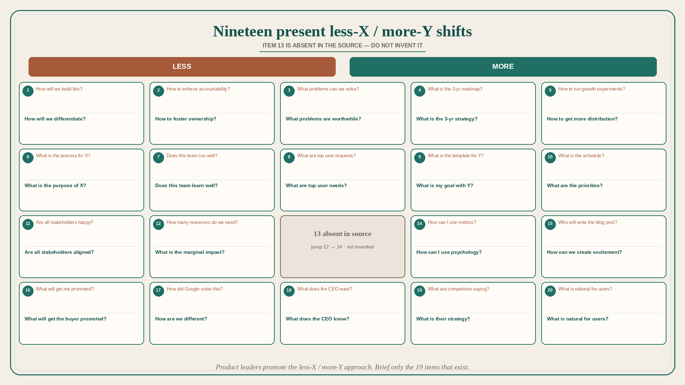

Nineteen present less-X / more-Y shifts (item 13 absent in source)
Source: Shreyas Doshi (@shreyas)
original post
What it claims
What we need in Product Management, as present in the source (item 13 is missing — jump from 12 to 14; not invented): (1) Less “How will we build this?” More “How will we differentiate?” (2) accountability → ownership (3) solvable problems → worthwhile problems (4) 3-yr roadmap → 3-yr strategy (5) growth experiments → distribution (6) process for X → purpose of X (7) run well → learn well (8) top user requests → top user needs (9) template for Y → goal with Y (10) schedule → priorities (11) stakeholders happy → aligned (12) how many resources → marginal impact (14) metrics → psychology (15) who writes the blog post → how we create excitement (16) what will get me promoted → what will get the buyer promoted (17) how Google solved this → how we are different (18) what the CEO wants → what the CEO knows (19) what competitors are saying → what is their strategy (20) what is rational for users → what is natural for users. Product leaders need to promote the less-X / more-Y approach on their teams.
Why it matters for a PO
These pairs are a diagnostic of feature-factory language. A PO who asks “worthwhile problem / strategy / purpose / needs / aligned / marginal impact / natural for users” runs a different refinement than one who asks “build / process / template / schedule / happy stakeholders / resources.”
3 takeaways
- Brief only the 19 items that exist; do not fill the 13-hole.
- Roadmap vs. strategy, requests vs. needs, happy vs. aligned, resources vs. marginal impact are the highest-frequency PO swaps.
- “What does the CEO know?” and “What is natural for users?” beat “What does the CEO want?” and “What is rational for users?”
Practice this week
Pick three pairs that match this week’s meetings. Rewrite one agenda question from the Less column to the More column. Run the meeting on the rewritten questions.